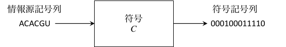
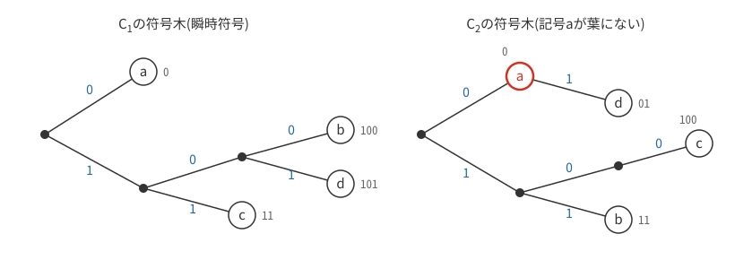
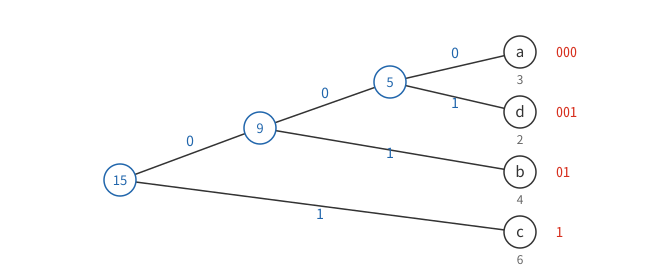
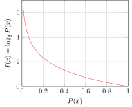
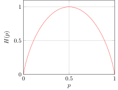
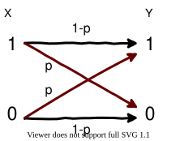
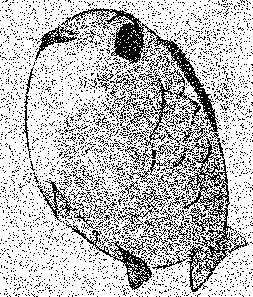
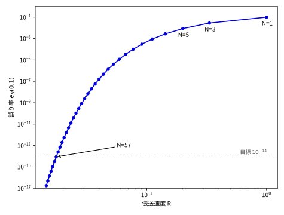
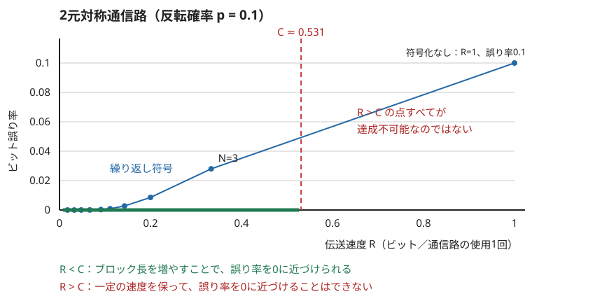
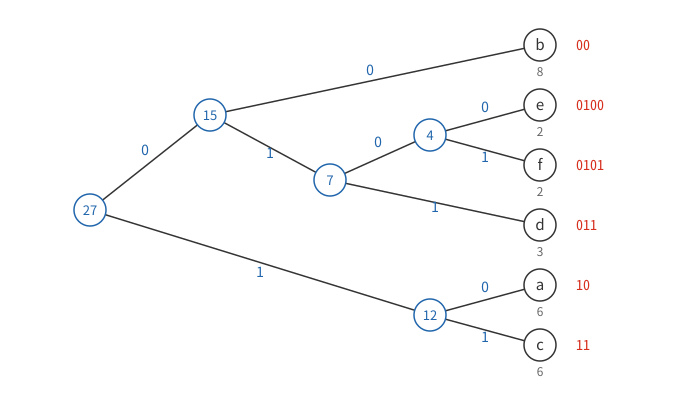

1. 情報理論の誕生
1948年、ベル研究所のクロード・シャノンは論文「通信の数学的理論」を発表しました。この論文でシャノンは、それまで漠然とした概念だった「情報」を確率と対数によって定量化し、そのうえで
-
データはどこまで圧縮できるか（情報源符号化定理）
-
ノイズのある通信路でどこまで正確に情報を送れるか（通信路符号化定理）
という2つの根本的な問いに、理論的な限界を与えて一挙に答えてしまいました。データ圧縮から通信、記録媒体まで、現在のデジタル技術はすべてこの理論の上に成り立っています。
本章では、この2つの定理を目標に情報理論を概観します。定理の証明や厳密な理論展開には立ち入りません。本格的に学びたい人は情報理論の専門書（たとえば Cover & Thomas, Elements of Information Theory）にあたってください。
2. 符号化とデータ圧縮
2.1. 符号
テキスト、画像、音声などのデータをコンピューターで扱うには、\(\TT 0\) と \(\TT 1\) の並びに変換する必要があります。この変換の規則を符号、変換の操作を符号化とよびます。変換前の記号を情報源記号、変換後の記号を符号記号とよび、情報源記号1つに割り当てられる符号記号の並びを符号語とよびます。同様に、変換前後の記号の並びをそれぞれ情報源記号列、符号記号列とよびます。
たとえば、新型コロナウイルスのゲノム配列に現れる4種類の記号 \(\TT A, \TT C, \TT U, \TT G\) は、次の符号 \(C_a\) でビット列に変換できます。
| 情報源記号 | \(\TT A\) | \(\TT C\) | \(\TT U\) | \(\TT G\) |
|---|---|---|---|---|
符号語 |
\(\TT{00}\) |
\(\TT{01}\) |
\(\TT{10}\) |
\(\TT{11}\) |

このように各記号に同じ長さの符号語を割り当てた符号を固定長符号といいます。文字コードの章で学んだASCIIも7ビットの固定長符号です。記号 \(x\) の符号語を \(C(x)\)、その長さ（符号語長）を \(|C(x)|\) と表します。記号列の符号化は、各記号の符号語を順につなげるだけです。記号列 \(x_1 x_2\cdots x_k\) を符号化して得られる符号記号列を \(C^+(x_1 x_2\cdots x_k)=C(x_1)C(x_2)\cdots C(x_k)\) と書きます。
2.2. 頻度の高い記号に短い符号語を — 可変長符号
1830年代に生まれたモールス符号では、英語で最も頻度の高い \(\TT E\) に最短の符号語「・」が割り当てられています。頻度の高い記号に短い符号語を与えれば、全体の長さは短くなる——これがモールス以来のデータ圧縮の基本原理です。記号ごとに符号語の長さが異なる符号を可変長符号といいます。
10文字の記号列 \(\TT{ACAAUAACAG}\) で試してみます。この記号列では \(\TT A\) が6回と多く出現するので、\(\TT A\) に短い符号語を割り当てる次の符号 \(C_b\) を考えます。
| 記号 | \(\TT A\) | \(\TT C\) | \(\TT U\) | \(\TT G\) |
|---|---|---|---|---|
符号語 |
\(\TT 0\) |
\(\TT{10}\) |
\(\TT{110}\) |
\(\TT{111}\) |
固定長符号 \(C_a\) では20ビットだったものが16ビットになりました。情報源記号1つあたりに換算すると、記号列の平均符号語長は2ビットから16/10=1.6ビットに短くなっています。
2.3. 可変長符号の落とし穴 — 一意復号と瞬時符号
可変長符号では、符号記号列のどこが符号語の切れ目かがわからなくなるという問題が生じます。モールス符号は符号語の間に時間的な間を入れて切れ目を表していますが、これは切れ目のための第3の記号を追加していることに他ならず、その分データ量が増えます。切れ目の記号なしで復号できる符号はどのようなものでしょうか。次の2つの符号を見てください。
| 記号 \(x\) | 符号語 \(C_1(x)\) | 符号語 \(C_2(x)\) |
|---|---|---|
\(\TT a\) |
\(\TT{0}\) |
\(\TT{0}\) |
\(\TT b\) |
\(\TT{100}\) |
\(\TT{11}\) |
\(\TT c\) |
\(\TT{11}\) |
\(\TT{100}\) |
\(\TT d\) |
\(\TT{101}\) |
\(\TT{01}\) |
符号 \(C_2\) で符号記号列 \(\TT{01001111000}\) を復号してみると、
-
\(\uB{01}{d}\uB{0}{a}\uB{01}{d}\uB{11}{b}\uB{100}{c}\uB{0}{a}\) より \(\TT{dadbca}\)
-
\(\uB0a\uB{100}c\uB{11}b\uB{11}b\uB0a\uB0a\uB0a\) より \(\TT{acbbaaa}\)
と、少なくとも二通りに復号できてしまいます。どの符号記号列も高々一通りにしか復号できない符号を一意復号可能な符号といいます。\(C_2\) は一意復号可能でない符号であり、実用には使えません。
一方、符号 \(C_1\) で \(\TT{1000100110101}\) を復号すると、
-
\(\uB{100}b\uB0a\uB{100}b\uB{11}c\uB0a\uB{101}d\)
のように、左から読み進めるだけで、先読みも後戻りもせずに記号を確定してゆけます。このような符号を瞬時符号といいます。瞬時符号であるための条件は簡単で、
どの符号語も、他の符号語の先頭部分（語頭、プレフィックス）になっていない
ことです（語頭条件）。\(C_2\) では \(C_2(\TT a)=\TT 0\) が \(C_2(\TT d)=\TT{01}\) の語頭になっているのに対し、\(C_1\) はどの符号語も他の符号語の語頭になっていません。
この条件は、符号を符号木という木構造で表すとよく見えます。根から葉に向かって辺をたどり、分岐の上側を \(\TT 0\)、下側を \(\TT 1\) と読むと、根からの経路が符号語に対応します。語頭条件は「すべての記号が葉に配置されている」ことと同じです。

\(C_2\) では記号 \(\TT a\) が葉ではなく途中のノードにあるため、\(\TT 0\) を読んだ時点で「\(\TT a\) で確定」か「\(\TT d\) の途中」かが区別できません。瞬時符号なら、葉に到達するたびに記号を1つ確定して根に戻る、という機械的な操作で復号できます。
2.4. ハフマン符号
では、瞬時符号の中で平均符号語長を最小にするには、どのように符号語を割り当てればよいのでしょうか。この問題を解くのがハフマン符号です。アルゴリズムはとても単純です。
-
各記号の出現頻度（または生起確率）を求め、記号ごとにノードを作る
-
頻度の最も小さい2つのノードをまとめて新しいノードを作り、頻度の和をその頻度とする
-
すべてが1つの木にまとまるまで2.を繰り返す
-
各分岐の2本の辺に \(\TT 0\) と \(\TT 1\) を割り当て、根から葉までの経路を符号語とする
記号列 \(\TT{cbaccbcdacadbbc}\)（15文字）で試してみます。頻度は次のとおりです。
| 記号 | \(\TT a\) | \(\TT b\) | \(\TT c\) | \(\TT d\) |
|---|---|---|---|---|
頻度 |
3 |
4 |
6 |
2 |
まず最小の \(\TT d\)(2)と \(\TT a\)(3)をまとめて頻度5のノードを作ります。次に残りの中で最小の \(\TT b\)(4)と今作ったノード(5)をまとめて頻度9のノードを、最後に \(\TT c\)(6)と(9)をまとめて根を作ります。分岐の上側の辺に \(\TT 0\)、下側に \(\TT 1\) を割り振ると、次の符号木が得られます。

| 記号 | \(\TT a\) | \(\TT b\) | \(\TT c\) | \(\TT d\) |
|---|---|---|---|---|
符号語 |
\(\TT{000}\) |
\(\TT{01}\) |
\(\TT{1}\) |
\(\TT{001}\) |
作り方から、すべての記号は葉に配置されるので、ハフマン符号はつねに瞬時符号です。元の記号列を符号化すると符号記号列長は29となり、平均符号語長は29/15≈1.93ビットです（2ビットの固定長符号より短くなりました）。\(\TT 0\) と \(\TT 1\) の割り振り方には任意性があるため、ハフマン符号は一意には決まりませんが、各記号の符号語長はどの割り振りでも同じです。
そして、ハフマン符号については次のことが証明されています（証明は専門書に譲ります）。
記号ごとに符号語を割り当てる瞬時符号の中で、ハフマン符号は平均符号語長を最小にする。
|
1951年、MITの大学院生だったハフマンは、担当教授ファノの授業で「最も効率のよい2進符号を求めよ」というレポート課題に取り組みました。実はこれは、シャノンとファノ自身が取り組んで解決できていなかった未解決問題でしたが、ファノはそのことを告げていませんでした。ハフマンは数ヶ月の試行錯誤の末にこのアルゴリズムを発見し、最適性の証明にも成功します。後に彼は「未解決問題だと知っていたら取り組まなかっただろう」と述べています。ハフマン符号は現在もZIP、JPEG、PNG、MP3など多くの圧縮形式の構成要素として使われています。 |
3. 情報量とエントロピー — 圧縮の限界
ハフマン符号より平均符号語長の短い符号はもう作れないのでしょうか。この問いに答えるには、そもそも「そのデータには情報がどれだけ詰まっているのか」を測る物差しが必要です。シャノンはこの物差しを確率から作りました。
3.1. 自己情報量
確率 \(P(x)\) で生起する事象 \(x\) が起きたことを知ったとき、得られる情報量（自己情報量）を
と定義します。単位はシャノンにちなんでSh（シャノン）またはビットです。この定義は次の直観を数式にしたものです。
-
起こりにくいことほど情報が多い: ある日の天気を「雨」「雨ではない」の2通りで扱い、確率を3%と97%とするモデルを考えます。その日「雨だった」と知る情報量は \(-\log_2 0.03\approx5.06\) Sh、「雨ではなかった」と知る情報量は \(-\log_2 0.97\approx0.04\) Shです。予報そのものの価値や正確さを測っているわけではありません。

3.2. エントロピー — 平均情報量
情報源が記号 \(x_1, x_2, \ldots, x_n\) をそれぞれ確率 \(P(x_1), P(x_2), \ldots, P(x_n)\) で、毎回独立に生成するとします（記憶のない情報源）。この情報源から記号を1つ受け取るときに得られる情報量の期待値
を情報源のエントロピー（平均情報量）とよびます。確率0の項は \(0\log_2 0=0\) とする約束で扱います。
| 【例】 |
5つの記号が確率 \(P(\TT e)=\frac12, P(\TT a)=\frac14, P(\TT d)=\frac18, P(\TT b)=P(\TT c)=\frac1{16}\) で生起する情報源のエントロピーは、
\[H(X)=\frac12\cdot 1+\frac14\cdot 2+\frac18\cdot 3+\frac1{16}\cdot 4+\frac1{16}\cdot 4 = 1.875 \;[\text{Sh}]\]
|
この例でハフマン符号を構成すると、符号語は \(C(\TT e)=\TT 0\), \(C(\TT a)=\TT{10}\), \(C(\TT d)=\TT{110}\), \(C(\TT b)=\TT{1110}\), \(C(\TT c)=\TT{1111}\) となり、各記号の符号語長はちょうど \(-\log_2 P(x)\) に一致します。平均符号語長も1.875ビットで、エントロピーと一致します。これは偶然ではありません。
3.3. 情報源符号化定理
シャノンは、エントロピーがまさに圧縮の限界であることを証明しました。
【情報源符号化定理】 記憶のない情報源 \(X\) の記号を符号記号 \(\TT 0, \TT 1\) で符号化するとき、平均符号語長 \(L\) が
を満たす瞬時符号を構成できる。また、どのような一意復号可能な符号でも \(L\) を \(H(X)\) より小さくすることはできない。
つまり、平均符号語長はエントロピー未満にはできず、かつエントロピーに1を加えた値未満までは近づけられます。この下限 \(H(X)\) を情報源符号化におけるシャノン限界とよびます。前節の例のように、すべての生起確率が \(2^{-k}\)（\(k\) は正の整数）の形のときはハフマン符号がちょうど限界を達成し、一般のときも記号をいくつかまとめて符号化（ブロック符号化）すれば、1記号あたりの平均符号語長をいくらでも \(H(X)\) に近づけられます。
|
瞬時符号の符号語長がとりうる値にはクラフトの不等式とよばれる制約があり、この定理はそこから導かれます。名前だけ覚えておけば、専門書を読むときの道しるべになります。 |
3.4. 圧縮の果てはランダム列
シャノン限界まで圧縮されたビット列はどのような姿をしているでしょうか。符号記号が \(\TT 0\) と \(\TT 1\) の2種類で、\(\TT 0\) の生起確率を \(p\) とすると、符号記号1つが運べる情報量は、確率 \(p\), \(1-p\) の2値情報源のエントロピーを \(p\) の関数とみたエントロピー関数
で与えられます。グラフを見ると、\(H(p)\) が最大値1をとるのは \(p=0.5\) のとき、つまり \(\TT 0\) と \(\TT 1\) が等確率で現れるときだけです。

圧縮に使える規則性が残っていれば、まだ圧縮できる余地があります。ただし、0と1が半々に現れるだけでは「ランダム」とはいえません。01010101… も半々ですが、次のビットを簡単に予測できます。記号同士の依存関係も調べる必要があります。
十分に圧縮したファイルは、同じ方式でもう一度圧縮してもほとんど縮まないことが多く、むしろヘッダー分だけ大きくなることもあります。しかし、形式を示すヘッダーや別のモデルで捉えられる規則性が残るため、「圧縮データはランダム列と区別できない」と一般には断言できません。圧縮と暗号化も別の処理です。
3.5. 言語の冗長度
英語のアルファベット26文字と空白の27記号がすべて等確率で現れるとすれば、1文字のエントロピーは \(\log_2 27\approx 4.75\) Shです。しかし実際の英文では文字の頻度に偏りがあり（\(\TT e\) や空白が多い）、さらに \(\TT t\) の後には \(\TT h\) が来やすいといった強い文脈依存があります。シャノンは、十分に長い英文を読んだ後の次の1文字のもつ情報量は1.3Sh程度と見積もりました。最大値4.75Shに対する差の割合
を冗長度といいます。つまり英文の7割ほどは冗長だとみなせます（この種の推定値は、対象記号や推定方法によって文献ごとに幅があります）。日本語をはじめ、人間の言語はどれも高い冗長性をもつことが知られています。冗長だからこそ、多少聞き取れなくても会話が成立し、流し読みでも大意がつかめるのです。この「冗長性はノイズへの耐性を生む」という観察が、次の話題への橋渡しになります。
4. 誤り訂正 — シャノンによる視点の転換
4.1. ノイズのある通信路
ここまでは、データから冗長性を取り除く話でした。今度は逆に、冗長性をあえて足す話です。
通信路や記憶装置には、電波干渉、ディスクの傷、宇宙放射線などによるノイズが避けられません。デジタルデータでは、たった1ビットの反転がプログラムのクラッシュや暗号データの復号不能を引き起こすことがあります。
話を単純にするため、次のモデルを考えます。送信する記号は \(\TT 0\) と \(\TT 1\) のみで、通信路を通ると、各記号は確率 \(p\) で独立に反転して（\(\TT 0\) なら \(\TT 1\) に、\(\TT 1\) なら \(\TT 0\) に化けて）受信されます。\(p\) をビット誤り率とよび、このような通信路を2元対称通信路とよびます。

たとえば \(p=0.1\)（1割のノイズ）の通信路に画像を通すと、左の画像は右のようになります。

必要とされる信頼性は、この例よりはるかに高いのが普通です。たとえば毎日1GBを1年間読み出すと約3.0×1012ビットになりますから、年間を通してどこか1ビットでも誤る確率を数%に抑えたければ、1記号あたりの誤り率を10-14程度にまで下げる必要があります。1割も誤る通信路で、どうすればそんな信頼性を実現できるのでしょうか。
4.2. 素朴な方法 — 繰り返し符号
すぐ思いつくのは、同じ記号を繰り返し送ることです。\(\TT 0\) を \(\TT{000}\)、\(\TT 1\) を \(\TT{111}\) と3倍にして送り、受信側は3個ずつ区切って多数決をとります。記号列 \(\TT{01001}\) なら次のようになります（赤が水増しした分）。
\(\TT 0\color{red}{\TT{00}}\ \TT 1\color{red}{\TT{11}}\ \TT 0\color{red}{\TT{00}}\ \TT 0\color{red}{\TT{00}}\ \TT 1\color{red}{\TT{11}}\)
これを繰り返し符号といいます。3個のうち2個以上が反転しない限り正しく復号できるので、復号後の誤り率は
となり、\(e_3(0.1)=0.028\) です。誤り率10%が約3%に下がりました（下図）。
反転が独立で \(0\leq p<0.5\) なら、繰り返し回数 \(N\)（多数決のため奇数とします）を増やせば、誤り率はいくらでも下げられます。しかし、ただではすみません。1ビットの情報を送るのに \(N\) 個の記号を使うので、記号1つあたりが運ぶ情報量、すなわち伝送速度は
に落ちてしまいます。\(p=0.1\) の通信路で目標の誤り率10-14を達成するには \(N=57\) が必要で、伝送速度は57分の1、つまり1GBを送るのに57GB送ることになります。これではとても使い物になりません。

このグラフが示すとおり、繰り返し符号では誤り率を0に近づけようとすると、伝送速度も0に近づいてしまいます。
4.3. シャノン以前の見方
シャノンが登場するまで、通信技術者の常識はまさにこの繰り返し符号の延長線上にありました。すなわち、
誤り率を下げたければ、そのぶん伝送速度（あるいは送信電力や帯域といった資源）を犠牲にするしかない。誤り率を限りなく0に近づけるには、速度を限りなく0に近づけるしかない。
という見方です。信頼性と速度は際限のないトレードオフの関係にあり、「ノイズのある通信路で、速度を保ったまま誤りをほぼなくす」などということは、繰り返し符号だけからは実現できそうに見えません。これがすべての符号の限界なのでしょうか。
4.4. 通信路符号化定理
シャノンはこの常識を根底から覆しました。
【通信路符号化定理】 どの通信路にも、その通信路固有の値である通信路容量 \(C\) が定まる。伝送速度 \(R\) が
でありさえすれば、復号後の誤り率をいくらでも0に近づける符号が存在する。逆に \(R>C\) では、誤り率を0に近づけることはできない。
この定理の要点は \(R<C\) という条件の意味にあります。速度を0に向かって下げ続ける必要はなく、容量 \(C\) を下回る一定の速度を保ったまま、誤り率だけを好きなだけ0に近づけられるのです。ただし、そのためには符号のブロック長を十分長くする必要があり、遅延や計算量などの代償があります。有限の長さの実用的な符号では、速度と誤り率の間のトレードオフは残ります。ここでは、各回の通信が独立な、記憶のない通信路について述べています。
次の図は、容量 \(C\) が「誤り率を限りなく0に近づけられる速度の上限」であることを示す概念図です。\(R>C\) でも、ある程度の誤りを許せば通信できます。例えば \(p=0.1\) の通信路で符号化せずに送れば、\(R=1\)、ビット誤り率0.1です。容量を超える速度の点すべてが達成不可能なわけではありません。参照：Shannon, A Mathematical Theory of Communication（1948）。

ただし、シャノンの証明は「そのような符号が存在する」ことを示す存在証明であって、実用的な符号の作り方を与えるものではありませんでした。圧縮のほうはハフマンのアルゴリズムがすぐに見つかったのと対照的に、容量に迫る実用的な誤り訂正符号は長年見つからず、ターボ符号やLDPC符号などが実用化されて限界にほぼ到達するまでに、定理の発表から約50年かかりました。現在では、携帯電話（5G）、Wi-Fi、QRコード、深宇宙探査機との通信まで、あらゆる場面で誤り訂正符号が働いています。傷のついたCDが再生でき、かすれたQRコードが読み取れるのは、この理論の恩恵です。
4.5. 2元対称通信路の容量
通信路容量 \(C\) の正確な定義（相互情報量の最大値）は専門書に譲り、ここでは結果だけ示します。ビット誤り率 \(p\) の2元対称通信路の容量は、エントロピー関数 \(H(p)\) を用いて
となります。直観的には、記号1つは本来1ビットの情報を運べるはずですが、受信者から見ると「受け取った記号が反転したものかどうか」という不確かさ \(H(p)\) が残るため、そのぶんを差し引いた量が実際に伝わる、と読めます。
-
\(p=0\) （ノイズなし）なら \(C=1\)。記号1つで1ビットを運べます。
-
\(p=0.1\) なら \(C=1-H(0.1)\approx 0.53\)。9割の記号は正しく届いているのに、容量は0.53ビットしかありません。どの記号が反転したのか受信側にはわからないからです。それでも、速度0.53ビット/記号の直前までは、誤り率をほぼ0にできるのです。
-
\(p=0.5\) なら \(H(0.5)=1\) より \(C=0\)。受信記号は送信記号と無関係なコイン投げと同じになり、何も伝わりません。
|
遺伝情報にも、冗長性と誤りへの対処を区別して考えられる例があります。標準遺伝暗号では複数のコドンが同じアミノ酸を指定するため、一部の塩基置換ではアミノ酸が変わりません。ただし、これは元のDNA配列を復元する「訂正」ではありません。DNA複製時の校正や修復は別の仕組みです。 |
6. 練習問題の解答
まず自分で解いてから読むことをすすめます。
6.1. 問題1の解答
(1) どちらも瞬時符号ではありません。\(C_3\) では \(C_3(\TT a)=\TT 0\) が \(C_3(\TT d)=\TT{01}\) の語頭になっています（さらに \(\TT{01}\) は \(\TT{011}\) の、\(\TT{011}\) は \(\TT{0111}\) の語頭です）。\(C_4\) では \(C_4(\TT a)=\TT 0\) が \(C_4(\TT c)=\TT{010}\) の語頭になっています（さらに \(C_4(\TT d)=\TT{11}\) は \(C_4(\TT b)=\TT{1110}\) の語頭でもあります）。
(2) 一意復号可能です。\(C_3\) の符号語はいずれも「\(\TT 0\) の後に \(\TT 1\) が0個以上続く」形をしており、\(\TT 0\) が現れたら必ず新しい符号語の始まりです。したがって、符号記号列を \(\TT 0\) の直前で区切れば復号は一通りに定まります。ただし、\(\TT 0\) を読んだ時点では次の記号を見るまで \(\TT a\) か \(\TT d\) （あるいは \(\TT c, \TT b\)）かが確定しないため、瞬時符号ではありません。一意復号可能であることと瞬時であることは別の性質です。
(3) \(C_1(\TT d)C_1(\TT a)C_1(\TT c)C_1(\TT b)C_1(\TT a)C_1(\TT d)\) をつなげて、
\(\uB{101}d\uB{0}a\uB{11}c\uB{100}b\uB{0}a\uB{101}d\) より \(\TT{1010111000101}\)
(4) 左から読み進めて葉に到達するたびに記号を確定すると、
\(\uB{100}b\uB{0}a\uB{101}d\uB{11}c\uB{0}a\uB{100}b\) より \(\TT{badcab}\)
6.2. 問題2の解答
(1) 6種類の記号を2進法で表現するには、\(2^2<6\le 2^3\) より3ビット必要です。素直に2進法の数の順に符号語を割り当てると、以下の符号が得られます。
| 記号 | \(\TT a\) | \(\TT b\) | \(\TT c\) | \(\TT d\) | \(\TT e\) | \(\TT f\) |
|---|---|---|---|---|---|---|
符号語 |
\(\TT{000}\) |
\(\TT{001}\) |
\(\TT{010}\) |
\(\TT{011}\) |
\(\TT{100}\) |
\(\TT{101}\) |
(2) 記号列の長さは27なので、27×3=81です。
(3) 記号の出現回数は以下のとおりです。
| 記号 | \(\TT a\) | \(\TT b\) | \(\TT c\) | \(\TT d\) | \(\TT e\) | \(\TT f\) |
|---|---|---|---|---|---|---|
出現回数 |
6 |
8 |
6 |
3 |
2 |
2 |
頻度の小さい順に \(\TT e\)(2)と \(\TT f\)(2)、その結果(4)と \(\TT d\)(3)、\(\TT a\)(6)と \(\TT c\)(6)、\(\TT b\)(8)と(7)、最後に(15)と(12)をまとめると、たとえば次の符号木が得られます。

| 記号 | \(\TT a\) | \(\TT b\) | \(\TT c\) | \(\TT d\) | \(\TT e\) | \(\TT f\) |
|---|---|---|---|---|---|---|
符号語 |
\(\TT{10}\) |
\(\TT{00}\) |
\(\TT{11}\) |
\(\TT{011}\) |
\(\TT{0100}\) |
\(\TT{0101}\) |
\(\TT 0\) と \(\TT 1\) の割り当てには任意性がありますので、この表と異なっていても、瞬時符号でかつ各記号の符号語長が同じであれば正解です。
(4) 符号記号列長は
となり、固定長符号の81に対して65に削減できました。平均符号語長は65/27≈2.41ビットで、固定長符号の3ビットより短くなっています。
6.3. 問題3の解答
画像(a)が圧縮ファイル(ii)、画像(b)が元のテキストファイル(i)です。
画像(b)には斜めの縞、つまり規則的な繰り返しパターンが見えます。Shift_JISでは日本語の文字の多くが2バイト(16ビット)で表されるため、16ビットごとの周期性が現れるのです。規則性があるということは、前を読めば先がある程度予測できるということであり、まだ冗長性が残っている、すなわち圧縮の余地があることを意味します。
一方、画像(a)は0と1がほぼ半々の砂嵐のように見えます。圧縮によって目立つ規則性が減った姿と整合します。ただし、外見や0と1の割合だけで圧縮の有無を確定することはできません。ここでは、提示した2枚の画像と作成方法を比較した説明です。
なお、「黒い部分が多いほうが圧縮ファイル」という見方は誤りです。もしそうなら真っ黒な画像が最も圧縮されたデータになってしまいますが、長さが既知で、必ず1を出すとわかっている情報源なら、1記号あたりの情報量は0です（白黒を反転しても情報量は変わりません）。
ちなみに、この圧縮は第2回で触れた可逆圧縮、つまり元のデータを完全に復元できる圧縮です（749KBが252KBになりました）。JPEGやMP3のような非可逆圧縮とは区別してください。
以上です